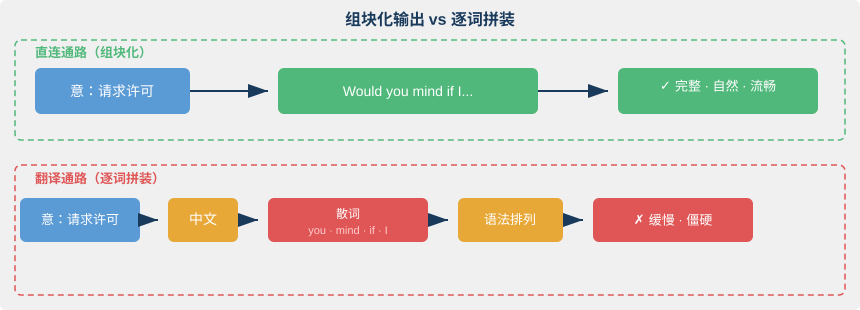
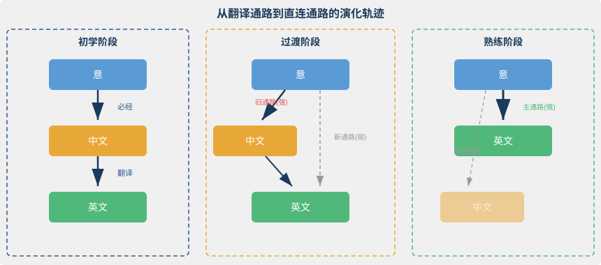
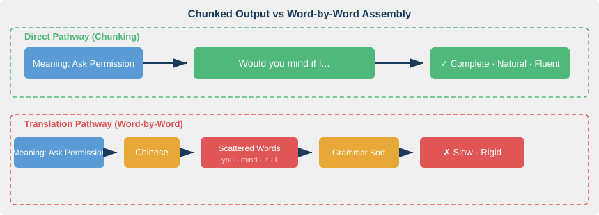
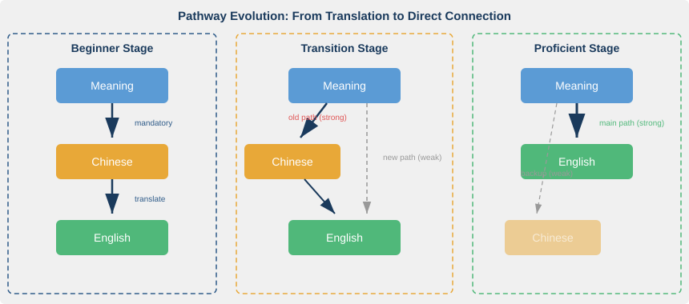

第三章：直连，从「意」到表达
The Direct Link
"Fluency is not about knowing more words; it is about knowing fewer routes to the same meaning." — Norman Segalowitz (paraphrase)
核心问题：如何绕过中文，建立「意↔英文表达」的直接通路？
3.1 大脑扫描揭示的秘密
2007年，神经语言学家 Abutalebi 和 Green 用 fMRI（功能性磁共振成像）扫描了一批熟练双语者的大脑。他们发现了一个反直觉的现象：同一个人处理第二语言时，大脑在不同领域的激活模式截然不同。在高度熟练的领域（比如一位在英语环境工作多年的研究者讨论专业话题），大脑的激活模式接近母语者，前额叶皮层几乎不需要额外介入。但切换到不熟悉的领域（比如日常争论、表达微妙的情绪），前额叶突然高度活跃，大脑被迫切回"翻译模式"。
这个发现击碎了一个常见幻觉：以为"学好英语"是一个整体状态，像开关一样，啪一下全通了。
我自己也有过类似体验。多年前，我第一次发现自己能在技术讨论中不假思索地说英文，是在一次跨国项目的电话会议上。信号处理的概念、算法的逻辑关系，直接对应着英文表达，中间没有中文做中转。但会后跟同事闲聊周末计划，我却频频卡壳。想说"随便逛逛"，脑中先蹦出中文，再硬译，结果说出口的英文总是别扭。
技术讨论像高速公路，闲聊却像没修好的土路。为什么？Abutalebi 和 Green 的研究给了答案：每一条「意到英文」的通路都要单独铺设。你在某个领域积累了足够多的练习，那个领域的通路就通了。换个领域，通路不会自动延伸过去。
"用英文思考"不是一个开关。它更像一栋房子里的布线，有些房间已经通电，有些房间还黑着。
3.2 直连通路的本质：程序性知识
上面的现象指向一个关键区分：你知道一条规则，和你能不假思索地使用它，是完全不同的两种知识。
认知心理学家 Anderson（1983）在他的 ACT 理论（自适应思维控制，Adaptive Control of Thought）中提出了这个核心框架。他将知识分为两类。陈述性知识（Declarative Knowledge）是你能说出来的，比如"现在完成时表示过去发生的动作与现在有关联"。程序性知识（Procedural Knowledge）是你能做出来的，比如当你想表达"我已经吃过了"时，嘴巴自动说出 "I've already eaten"，不需要调用任何语法规则。
绝大多数中国英语学习者的知识库严重偏向陈述性一侧。他们能讲清虚拟语气的用法，却在真正需要表达"假如当初……"时卡壳。他们知道 "would have done" 的构成方式，但从一个悔恨的画面到这个句式之间，还隔着一段漫长的中文通道。
DeKeyser（2007）的技能习得理论（Skill Acquisition Theory）进一步解释了这个过程。从陈述性知识到程序性知识的转化，必须经过大量有意义的练习（deliberate practice）。不是机械重复，而是在真实交际情境中反复使用。你不会通过抄写一百遍 "I've already eaten" 来建立直连通路。你需要在十次、二十次、五十次真实场景中，当"我吃过了"这个意出现时，让嘴巴直接说出那句英文。
所以，「意→英文」的直连通路，本质上就是程序性知识。当一个「意」出现在脑中（一个画面、一种情绪、一个逻辑判断），对应的英文表达自动被激活，不需要中文做翻译中介，也不需要语法规则做拼装指南。
想想学开车。最初你踩离合、挂挡、松离合、踩油门，每一步都要默念口诀。三个月后，你一边听播客一边完成全套动作。手脚的配合已经变成了程序性知识。英语的直连通路跟这个过程一模一样，只不过你要把「意」和「英文表达」之间的配合练到同样的自动化程度。
3.3 组块化：直连的微观机制
程序性知识解释了"为什么直连是可能的"，但还没回答一个问题：直连的时候，大脑到底在输出什么？
答案是组块（Chunk）。
Miller（1956）在经典论文《神奇的数字七》中指出，人类工作记忆（Working Memory）的容量极其有限，大约 7±2 个单元。关键在于：一个"单元"可以是一个字母，也可以是一个词，甚至是一个完整的短语。把多个小单元打包成一个大单元的过程，就是组块化（Chunking）。
在语言产出中，组块化决定了说话的流畅度。母语者不是一个词一个词拼装句子，而是一组块一组块地输出。Wray（2002）的研究表明，母语者的语言产出中约 70% 是程式化序列（Formulaic Sequences），即预制好的词组搭配、习语和句型框架。当母语者想表达请求，脑中激活的不是 would + you + mind + if + I 这五个独立的词，而是 "Would you mind if I..." 这一整个组块。
这对英语学习者意味着什么？不要试图用语法规则拼装句子，而要把「意→组块」的映射练到自动化。每一个组块就是一条直连通路的终端。意一出现，组块就弹出来。
几个例子：
| 意 | 直连组块 | 而不是逐词翻译 |
|---|---|---|
| 请求许可 | "Would you mind if I..." | would + you + mind + if + I |
| 惊讶/意外发现 | "I had no idea that..." | 我 + 不知道 + 那个 |
| 解释原因 | "The thing is..." / "What happened was..." | 事情 + 是 + 这样的 |
| 表达遗憾 | "I wish I had..." | 我 + 希望 + 我 + 有 |
| 委婉拒绝 | "I'm afraid I can't..." | 恐怕 + 我 + 不能 |
下图展示了组块化输出和逐词拼装的区别：

直连通路的速度优势是压倒性的。当「意」激活一个组块时，工作记忆只需要处理一个单元。逐词拼装呢？你要同时在工作记忆中摆弄五六个词加一套语法规则，认知负荷直接拉满。翻译式说英语总是慢半拍，不是你反应慢，是你的大脑在做不必要的重活。
组块化还解释了一个常见困惑：为什么背了很多单词，说话还是不流利？因为单词是组块的原材料，不是组块本身。你的词汇表里有 mind、would、if，但你的组块库里没有 "Would you mind if I..."。这就像你有一仓库的零件，却没有一辆组装好的车。真正让你上路的不是零件的数量，而是组装完毕的整车，也就是可以直接调用的组块。
Ericsson 等人（1993）关于刻意练习（deliberate practice）的研究进一步印证了这一点。专家和新手的核心差异不在于知识总量，而在于组块的数量和调用速度。国际象棋大师能在几秒内识别一个棋局模式并调出最佳走法，不是因为大脑更快，而是因为他们存储了数万个「局面→走法」的组块。语言产出同理：流利的英语使用者脑中储备了数以千计的「意→组块」映射，每一个都是一条预铺好的直连通路。
3.4 从翻译通路到直连通路：神经可塑性的证据
读到这里，你可能会问：道理我都懂，但一个成年人的大脑，真的还能重新"布线"吗？
能。而且有硬证据。
大脑具有神经可塑性（Neuroplasticity）。在整个生命周期中，神经元之间的连接都可以被创建、加强或削弱。新的认知通路随时可以被建立，前提是你给它足够的刺激和重复。
回到本章开头提到的 Abutalebi 和 Green（2007）的 fMRI 研究。他们的数据清晰地显示：熟练双语者处理第二语言时，大脑的激活模式逐渐接近母语者的模式。具体来说，初学者处理 L2（第二语言）时，前额叶皮层（负责控制和翻译的区域）高度活跃。这正是"先想中文再翻译"的神经学证据。随着熟练度提升，前额叶的激活减弱，与语言处理直接相关的区域（如左侧颞叶）的激活增强。翻译通路在逐渐退居二线，直连通路在逐渐成为主干道。
这里有一个重要的认知图景：直连通路的建立不是"推翻"翻译通路，而是在旁边修一条新路，然后让它越走越顺。翻译通路不会消失。在不熟悉的领域，你还是会退回去用它。但当直连通路被反复使用、不断强化后，大脑会优先选择它，因为它更快，认知负荷更低。
下图展示了从翻译通路到直连通路的演化轨迹：

关键条件是什么？大量的「意→英文」直接映射练习，而非「中文→英文」翻译练习。两者看起来相似，实质不同。翻译练习强化的是翻译通路：中文先激活，然后通过翻译转换为英文。直接映射练习强化的是直连通路：意先激活（画面、情感、意图），然后直接连接英文表达，中文被绕过。
多长时间能建立一条稳定的直连通路？没有统一答案，因变量太多：目标领域的复杂度、练习的密度和质量、个体的语言基础。但研究和实践给出了一些参照。在密集沉浸环境下（每天 8 小时以上的英文输入/输出），3 到 6 个月可以在一个特定领域建立相当稳定的直连通路。在非沉浸环境下，比如在国内每天抽出 1-2 小时做高质量的直连练习，周期可能延长到 12-18 个月，但通路同样可以建立。
好消息是，你不需要出国才能启动这个过程。
3.5 三个实用策略：开始建立你的直连
理论讲完了。现在的问题是：如果你既不住在英语国家，也没有每天八小时的沉浸环境，怎么开始？
以下三个策略，不需要出国，不需要外教，今天就可以开始。
策略一：场景锚定
不要试图"全面提升英语水平"。这个目标太模糊，大脑不知道该往哪条路铺线。选一个你最熟悉、用英文最频繁的场景作为锚点：写工作邮件、读技术文档、讨论某个你热爱的话题（摄影、健身、投资）。在这个场景里，你已经有大量的「意」，你知道自己想说什么。缺的只是「意→英文」的那条线。
先深后广。一个场景的直连通路建立得越扎实，经验就越容易迁移到相邻场景。不是先学会了"所有英语"再去做专业讨论。恰恰相反：在专业讨论中一条一条地铺设直连通路，这些通路的模式会逐渐延伸到更多领域。
策略二：意象触发
当你看到一个场景、想到一件事、产生一种情绪时，不要先用中文命名它，直接尝试用英文描述。看到窗外下雨，不要先想"下雨了"，直接调动那个画面（雨滴、灰色天空、潮湿的空气），尝试让英文从画面中长出来："It's pouring outside" 或 "The sky looks so gloomy"。
初期会很慢。你会卡住，会觉得挫败，会忍不住退回中文。这恰恰是新通路正在建立的信号。你在强迫大脑走一条还没铺好的路，每走一次，路面就结实一分。完全卡住了怎么办？不要翻译，换一种方式表达同一个意。"说不出 gloomy？那试试 grey and depressing。"绕路也是在铺路。
策略三：组块积累
每天积累 3–5 个「意→英文组块」的映射。不是背单词，是背「一个意对应的一整个英文表达方式」。
具体做法：阅读英文材料（文章、字幕、播客文稿）时，遇到一个让你觉得"对，这就是我想表达的那个意！"的表达，把它记下来。记的时候不要写中文释义，写下你当时脑中的画面或场景。
例如： - 画面：会议上有人提了一个明显有问题的方案，你想委婉地说不行 → "I see where you're coming from, but..." - 画面：项目延期了，你要跟客户解释 → "We've run into a bit of a delay..." - 画面：朋友分享好消息，你由衷替他高兴 → "I'm so happy for you!"
用场景记忆，不用中文记忆。场景直接连接「意」，「意」直接连接组块。中文被绕过了。
3.6 🔬 语言实验：你的第一条直连
找一个安静的地方，给自己五分钟。按以下步骤操作：
第一步：选择场景。 想一个你最熟悉的工作或生活场景，比如项目会议上表达反对意见、向朋友推荐一部电影、跟房东报修。
第二步：调动「意」。 闭上眼睛，在脑中还原那个场景的画面。你在哪里？对面是谁？你想传达什么？用画面和情感来调动意，不要在脑中组织中文句子。
第三步：开口（或动笔）。 直接用英文表达你脑中的意。说出来或写下来都可以。不求完美，只求直接。
第四步：观察卡顿。 如果某个意你能直接用英文表达，恭喜，那条直连通路已经存在。如果你发现脑中冒出了中文，别慌，这标记了一条还需要铺设的通路。
第五步：记录。 画一张简单的表格：
| 意（用画面描述） | 能直连？ | 如果不能，卡在哪？ |
|---|---|---|
| 表达反对但不想伤人 | ？ | ？ |
| 解释为什么我的方案更好 | ？ | ？ |
| 感谢对方的理解 | ？ | ？ |
这张表就是你的"直连地图"，哪些亮着灯，哪些还是黑的。接下来的学习，就是一间一间地把灯点亮。
3.7 总结与过渡
本章的核心论点可以浓缩为一句话：「用英文思考」不是玄学，而是程序性知识的建立和组块化的自动输出。
直连通路有明确的认知科学基础。Anderson 的 ACT 理论解释了它的知识类型，DeKeyser 的技能习得理论指明了建立路径，Miller 的组块化理论揭示了微观机制，Abutalebi 和 Green 的神经影像学研究证实了大脑基础。它不是天赋，不是语感，而是可训练、可追踪、可加速的能力。
但直连通路只解决了"管道"问题，即如何让意和英文高效连接。管道里流动的「意」本身呢？如果你只是把中文世界的意用英文管道传输，会发现很多英文表达仍然别扭、不地道。原因不在管道，在源头。
英语的很多表达，其承载的「意」根植于英语世界的文化土壤。"Fair" 不只是"公平"，它背后是普通法几百年的契约精神。"Accountability" 不只是"问责"，它编码了一整套个人主义文化下的权责逻辑。当你不理解这些文化根基时，即使直连通路已经建好，流过管道的意仍然是"中文的意"穿着英文的衣服。
第四章，我们将深入这片文化的土壤。
参考文献
-
Anderson, J. R. (1983). The Architecture of Cognition. Cambridge, MA: Harvard University Press. — 提出 ACT 理论，区分陈述性知识与程序性知识，是认知心理学的基石之一。
-
DeKeyser, R. M. (2007). Skill Acquisition Theory. In B. VanPatten & J. Williams (Eds.), Theories in Second Language Acquisition (pp. 97–113). Lawrence Erlbaum. — 将技能习得理论引入二语习得领域，强调从陈述性到程序性的转化需要有意义的练习。
-
Miller, G. A. (1956). The Magical Number Seven, Plus or Minus Two: Some Limits on Our Capacity for Processing Information. Psychological Review, 63(2), 81–97. — 关于工作记忆容量限制和组块化的经典论文。
-
Wray, A. (2002). Formulaic Language and the Lexicon. Cambridge: Cambridge University Press. — 系统论述程式化序列在母语和二语中的角色，揭示母语产出中预制组块的普遍性。
-
Abutalebi, J., & Green, D. W. (2007). Bilingual language production: The neurocognition of language representation and control. Journal of Neurolinguistics, 20(3), 242–275. — 通过 fMRI 研究双语者大脑激活模式，发现 L2 熟练度提高后激活模式趋近母语者。
-
Ericsson, K. A., Krampe, R. T., & Tesch-Römer, C. (1993). The Role of Deliberate Practice in the Acquisition of Expert Performance. Psychological Review, 100(3), 363–406. — 刻意练习理论的奠基之作，支撑了本章关于有意义练习的论述。
Chapter 3: The Direct Link
From Yì to Expression
"Fluency is not about knowing more words; it is about knowing fewer routes to the same meaning." — Norman Segalowitz (paraphrase)
Core question: How can we bypass Chinese and establish a direct pathway between yì and English expression?
3.1 What Brain Scans Reveal
In 2007, neurolinguists Abutalebi and Green used fMRI to scan the brains of proficient bilinguals. They found something counterintuitive. When the same person processed their second language, brain activation patterns varied dramatically across domains. In areas of high proficiency (say, a researcher discussing her specialty after years in an English-speaking lab), activation patterns closely resembled those of native speakers; the prefrontal cortex barely needed to step in. But switch to an unfamiliar domain (everyday arguments, expressing subtle emotions), and the prefrontal cortex suddenly lit up. The brain was forced back into "translation mode."
This finding shatters a common illusion: the idea that "being good at English" is a single state, like a light switch you flip and everything turns on at once.
I've lived this myself. Years ago, I first noticed I could speak English without thinking during a cross-site project call. Signal processing concepts, algorithmic logic, technical trade-offs: they mapped straight to English with no Chinese relay in between. But after the call, chatting with a colleague about weekend plans, I kept stalling. I wanted to say something like "just wandering around," and my brain jumped to the Chinese first, then forced a clumsy translation. The result always sounded off.
Technical discussion felt like a highway. Small talk felt like an unpaved dirt road. Why? Abutalebi and Green's research gives the answer: every yì-to-English pathway has to be laid down separately. If you've logged enough practice in a given domain, that domain's pathway works. Switch domains, and the pathway doesn't automatically extend.
"Thinking in English" isn't a switch. It's more like the wiring in a house: some rooms already have power, others are still dark.
3.2 The Nature of the Direct Link: Procedural Knowledge
The phenomenon described above points to a crucial distinction: knowing a rule and being able to use it without thinking are two entirely different kinds of knowledge.
In his ACT theory (Adaptive Control of Thought), cognitive psychologist Anderson (1983) proposed this framework. He divided knowledge into two types. Declarative knowledge is what you can state: "the present perfect indicates that a past action has present relevance." Procedural knowledge is what you can do: when you want to express the yì of "I've already eaten," your mouth produces "I've already eaten" automatically, with no grammar rule summoned.
Most Chinese learners of English carry a knowledge base that tilts heavily toward the declarative side. They can explain the subjunctive mood clearly, yet stall when they actually need to express "if only things had been different..." They know how "would have done" is constructed. But between that image of regret and the construction lies a long Chinese corridor.
DeKeyser's (2007) Skill Acquisition Theory explains the transition. Moving from declarative to procedural knowledge requires large amounts of deliberate practice. Not mechanical repetition, but repeated use in authentic communicative situations. You won't build a direct link by copying "I've already eaten" a hundred times. You need ten, twenty, fifty real situations where that yì arises and your mouth directly produces the English.
So the yì-to-English direct link is, in essence, procedural knowledge. When a yì appears in your mind (an image, an emotion, a logical judgment), the corresponding English expression fires automatically. No Chinese translation intermediary. No grammar rules serving as assembly instructions.
Think of learning to drive. At first, you press the clutch, shift gears, release the clutch, press the accelerator, each step requiring a mental mantra. Three months later, you do the whole sequence while listening to a podcast. The hand-foot coordination has become procedural knowledge. The English direct link works exactly the same way. You just need to train the coordination between yì and English expression to that same level of automaticity.
3.3 Chunking: The Micromechanism of the Direct Link
Procedural knowledge explains why the direct link is possible. But it doesn't yet answer: when the direct link fires, what exactly is the brain outputting?
The answer: chunks.
In his classic 1956 paper "The Magical Number Seven," Miller showed that human working memory holds roughly 7±2 units. The key insight is what counts as a "unit." It can be a letter, a word, or an entire phrase. Packing multiple small units into one larger unit is chunking.
In language production, chunking determines fluency. Native speakers don't assemble sentences word by word. They output chunk by chunk. Wray's (2002) research showed that roughly 70% of native-speaker production consists of formulaic sequences: prefabricated collocations, idioms, and syntactic frames. When a native speaker wants to make a request, what activates in the mind isn't the five separate words would + you + mind + if + I. It's the whole chunk "Would you mind if I..."
What does this mean for learners? Don't try to assemble sentences with grammar rules. Train the yì-to-chunk mapping until it's automatic. Each chunk is the endpoint of a direct-link pathway. The moment a yì appears, the chunk pops out.
Some examples:
| Yì | Direct-link chunk | Rather than word-by-word |
|---|---|---|
| Requesting permission | "Would you mind if I..." | would + you + mind + if + I |
| Surprise / unexpected discovery | "I had no idea that..." | I + didn't + know + that |
| Explaining reason | "The thing is..." / "What happened was..." | The + thing + is + that |
| Expressing regret | "I wish I had..." | I + wish + I + had |
| Polite refusal | "I'm afraid I can't..." | I'm + afraid + I + can't |
The figure below contrasts chunk-based output with word-by-word assembly:

The speed advantage is overwhelming. When yì activates a chunk, working memory processes one unit. With word-by-word assembly, you're juggling five or six words plus a set of grammar rules, and cognitive load maxes out. Translation-style English always lags half a beat. It's not that you react slowly; it's that your brain is doing unnecessary heavy lifting.
Chunking also explains a common puzzle: why can you still not speak fluently after memorizing thousands of words? Because words are raw material for chunks, not chunks themselves. Your vocabulary contains mind, would, if, but your chunk store doesn't contain "Would you mind if I..." You've got a warehouse full of parts and no assembled car. What gets you on the road isn't the number of parts. It's the finished vehicle: chunks you can call directly.
Ericsson et al. (1993) on deliberate practice back this up. The core difference between experts and novices isn't total knowledge; it's the number and retrieval speed of chunks. Chess masters recognize a board pattern in seconds and recall the best move, not because their brains are faster, but because they hold tens of thousands of "position > move" chunks. Language production works the same way. Fluent English users carry thousands of "yì > chunk" mappings, each a pre-laid direct-link pathway.
3.4 From Translation Path to Direct Link: Evidence from Neuroplasticity
At this point you might ask: fine, the logic makes sense. But can an adult brain actually "rewire" itself?
It can. And there's solid evidence.
The brain exhibits neuroplasticity. Throughout life, connections between neurons can be created, strengthened, or weakened. New cognitive pathways can form at any time, provided they get enough stimulation and repetition.
Let's return to Abutalebi and Green's (2007) fMRI data. Their findings showed clearly that when proficient bilinguals process L2, brain activation patterns gradually converge toward those of native speakers. Specifically, beginners processing L2 show high prefrontal cortex activation (the region responsible for executive control and translation). That's the neural signature of "think in Chinese first, then translate." As proficiency rises, prefrontal activation drops, while activation increases in regions directly tied to language processing (like the left temporal lobe). The translation path is retreating to the background. The direct link is becoming the main road.
An important point: building the direct link doesn't "overthrow" the translation path. It lays a new road alongside it, then uses it until it becomes smooth. The translation path doesn't vanish. In unfamiliar domains, you'll still fall back on it. But once the direct link has been used repeatedly and reinforced, the brain prefers it, because it's faster and imposes lower cognitive load.
The evolution looks like this:

What's the key condition? Large amounts of yì-to-English direct-mapping practice, not Chinese-to-English translation practice. They may look similar, but they differ in substance. Translation practice strengthens the translation path: Chinese activates first, then converts to English. Direct-mapping practice strengthens the direct link: yì activates first (images, emotions, intentions), then connects straight to English. Chinese gets bypassed.
How long does it take to establish a stable direct link? There's no single answer. Too many variables: complexity of the target domain, density and quality of practice, the individual's language base. But research and practice offer rough benchmarks. In intensive immersion (eight-plus hours of English input/output daily), three to six months can build fairly stable direct links in a given domain. In non-immersive conditions, say one to two hours of high-quality direct-link practice daily at home, the timeframe stretches to 12 to 18 months. The pathways can still be built.
The good news: you don't need to move abroad to start this process.
3.5 Three Practical Strategies: Start Building Your Direct Link
Theory is done. Now the practical question: if you don't live in an English-speaking country and lack eight hours of daily immersion, how do you begin?
These three strategies require no relocation and no tutors. You can start today.
Strategy 1: Scene Anchoring
Don't try to "improve English across the board." That goal is too vague; the brain doesn't know which pathways to lay. Pick one scene you know well and use English in most often: writing work emails, reading technical docs, or discussing a topic you care about (photography, fitness, investing). In that scene, you already have plenty of yì. You know what you want to say. What's missing is the line between yì and English.
Go deep before going wide. The more solid the direct links in one scene, the more easily that experience transfers to adjacent scenes. You don't first learn "all of English" and then enter professional discussion. You do it the other way around: build direct links one by one inside that professional discussion, and those patterns gradually extend to more domains.
Strategy 2: Image Triggering
When you see a scene, think of something, or feel an emotion, don't name it in Chinese first. Try to describe it directly in English. You see rain outside the window: don't first think "下雨了." Directly call up the image (raindrops, gray sky, damp air) and let English grow from it. "It's pouring outside" or "The sky looks so gloomy."
At first it'll be slow. You'll stall. You'll feel frustrated and want to fall back on Chinese. That's exactly the signal that a new pathway is being built. You're pushing the brain down a road that isn't paved yet; each pass makes the surface firmer. Completely stuck? Don't translate. Try another way to express the same yì. "Can't think of gloomy? Try grey and depressing." Detours also pave the road.
Strategy 3: Chunk Accumulation
Accumulate 3 to 5 yì-to-English-chunk mappings per day. Not vocabulary. Whole expressions that correspond to a single yì.
Here's how: while reading English material (articles, subtitles, podcast transcripts), when you encounter an expression that makes you think "yes, that's exactly the yì I want to express," record it. When you write it down, don't add a Chinese definition. Write the image or scene in your mind at that moment.
Examples: - Scene: Someone proposes an obviously flawed idea in a meeting, and you want to decline politely > "I see where you're coming from, but..." - Scene: The project is delayed and you need to explain to a client > "We've run into a bit of a delay..." - Scene: A friend shares good news and you're genuinely happy for them > "I'm so happy for you!"
Remember by scene, not by Chinese. Scene connects directly to yì; yì connects directly to chunk. Chinese gets bypassed.
3.6 Language Experiment: Your First Direct Link
Find a quiet spot and give yourself five minutes. Follow these steps.
Step 1: Choose a scene. Think of a work or life situation you know well. Expressing disagreement in a project meeting, recommending a film to a friend, reporting a repair to your landlord.
Step 2: Evoke yì. Close your eyes and recreate the scene in your mind. Where are you? Who's across from you? What do you want to convey? Use images and emotion to call up yì. Don't compose Chinese sentences in your head.
Step 3: Speak (or write). Express the yì in your mind directly in English. Say it or write it. Aim for directness, not perfection.
Step 4: Observe where you stall. If you can express a yì directly in English, that direct link already exists. If Chinese pops into your head, don't panic. That marks a pathway that still needs paving.
Step 5: Record. Draw a simple table:
| Yì (describe with image) | Direct link? | If not, where did you stall? |
|---|---|---|
| Express disagreement without hurting feelings | ? | ? |
| Explain why your approach is better | ? | ? |
| Thank the other for understanding | ? | ? |
This table is your "direct-link map." Which rooms have light and which are still dark. The work ahead is turning on the lights, one room at a time.
3.7 Summary and Transition
This chapter's central claim boils down to one sentence: "thinking in English" isn't mysticism; it's the establishment of procedural knowledge and the automatic output of chunking.
The direct link has a clear foundation in cognitive science. Anderson's ACT theory explains its knowledge type. DeKeyser's Skill Acquisition Theory points the way to building it. Miller's chunking theory reveals the micromechanism. Abutalebi and Green's neuroimaging work confirms its neural basis. It's not innate talent, not vague "language sense." It's trainable, traceable, and acceleratable.
But the direct link only addresses the "pipeline" problem: how to connect yì and English efficiently. What about the yì flowing through the pipeline? If you're simply transmitting the yì of the Chinese-speaking world through an English pipeline, many expressions will still feel awkward or inauthentic. The cause lies not in the pipeline but at the source.
Many English expressions carry yì rooted in the cultural soil of the English-speaking world. "Fair" isn't just "公平"; behind it stands centuries of contractarian spirit in common law. "Accountability" isn't just "问责"; it encodes an entire logic of rights and duties under individualist culture. When you don't grasp these cultural roots, even with the direct link built, the yì flowing through the pipeline remains "Chinese yì" dressed in English clothes.
In Chapter 4, we dig into that cultural soil.
References
-
Anderson, J. R. (1983). The Architecture of Cognition. Cambridge, MA: Harvard University Press. — Introduces ACT theory, distinguishing declarative from procedural knowledge, a cornerstone of cognitive psychology.
-
DeKeyser, R. M. (2007). Skill Acquisition Theory. In B. VanPatten & J. Williams (Eds.), Theories in Second Language Acquisition (pp. 97–113). Lawrence Erlbaum. — Brings skill acquisition theory into second language acquisition; stresses that the shift from declarative to procedural knowledge requires deliberate practice.
-
Miller, G. A. (1956). The Magical Number Seven, Plus or Minus Two: Some Limits on Our Capacity for Processing Information. Psychological Review, 63(2), 81–97. — Classic paper on working memory limits and chunking.
-
Wray, A. (2002). Formulaic Language and the Lexicon. Cambridge: Cambridge University Press. — Systematic treatment of formulaic sequences in first and second language; documents the pervasiveness of prefabricated chunks in native production.
-
Abutalebi, J., & Green, D. W. (2007). Bilingual language production: The neurocognition of language representation and control. Journal of Neurolinguistics, 20(3), 242–275. — fMRI study of bilingual brain activation; finds that as L2 proficiency rises, activation patterns converge toward those of native speakers.
-
Ericsson, K. A., Krampe, R. T., & Tesch-Römer, C. (1993). The Role of Deliberate Practice in the Acquisition of Expert Performance. Psychological Review, 100(3), 363–406. — Foundational work on deliberate practice, underpinning this chapter's discussion of meaningful practice.